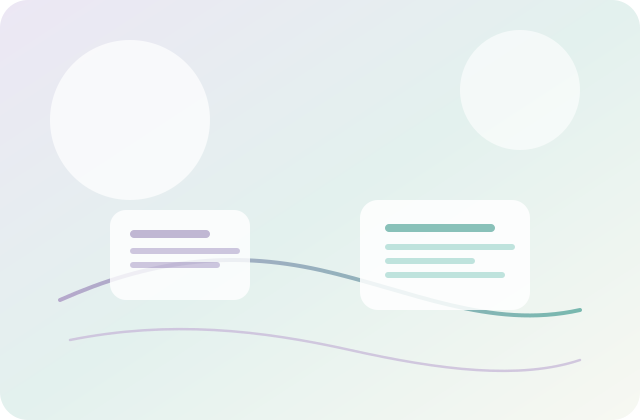

AIを活用したシステム・アプリケーション開発
人の理解や発想を広げる道具として、AIを自然に溶け込ませます。 必要な情報が静かに届き、考える余白が残る体験を設計します。
- AIを主張しすぎず、自然に使われる設計
- PoCからプロトタイプ、実運用を見据えた伴走
Curiosity to Impact
Fluxiaは、AIとデータを軸に、
実装を通じて価値を探求する開発会社です。
アイデアや仮説が「考えられたまま終わる」のではなく、
実現され、誰かの興味を広げ、次の行動につながっていく。
そのプロセスを、私たちは大切にしています。

Fluxiaについて
Fluxia合同会社は、AI・データ技術を用いて、システムやプロダクトを開発しています。 私たちの関心は、単なる技術実装ではありません。人が何に興味を持ち、どう世界を理解し、 どう行動を変えるのか。そのきっかけを、技術と実装によって生み出すことです。
好奇心は、本来とても個人的なものです。しかし、形になり、共有され、体験として届いたとき、 それは他者の好奇心を刺激し、連鎖していきます。Fluxiaは、その連鎖を生み出す「装置」を作る場です。
AIプロダクト
人の理解や発想を広げる道具として、AIを自然に溶け込ませます。 必要な情報が静かに届き、考える余白が残る体験を設計します。
データから「次の一歩」を読み取り、迷いを減らす材料へ整えます。 見落とされがちな傾向を、意思決定につながる言葉へ変換します。
体験設計から実装まで一貫して進め、使われる動線に落とし込みます。 使う人の手触りに合わせて、軽やかに磨き込みます。
プロダクト開発
Fluxiaでは、AIを活用した新しい体験型エンターテインメントを模索しています。 状況や物語が動的に生成される体験、人の選択が展開に影響を与える構造、 創造行為そのものに参加できるプロダクトを目指します。
これは単なる娯楽ではなく、「考えること」そのものを楽しむ体験です。
教育とエンターテインメントは本来対立しません。学ぶことが楽しくなれば、 人は自発的に知ろうとし、世界の見え方が変わっていきます。
業務効率化・PoC
情報の扱い方を変え、考える時間を取り戻す。そのための小さな仕組みを、 必要に応じて設計・実装します。完成品ありきではなく、作りながら最適な形を探すことを前提に。
会議ログや資料を要点整理し、次のアクションが見える形へ整えます。
散在するドキュメントを横断し、必要な情報にすぐ辿り着ける仕組み。
週次・月次のレポート作成を自動化し、編集の手間を減らします。
異常値や欠損を早期に発見し、分析前の確認作業をスムーズに。
ルールに沿って整理し、探す時間を減らす軽量な支援機能。
入力内容を自動で分類し、対応フローを整理しやすくします。
必要最小限のKPIを見える化し、意思決定の入口を整えます。
小さなAPIやUIで検証し、実運用へ向けた要件を固めます。
Catalog Detail
会議ログや資料を読みやすい要点へまとめ、意思決定が早く進むように整えます。 共有しやすいフォーマットを前提に設計します。
散らばった資料を横断し、必要な情報へすぐに辿り着くための軽量な検索導線を作ります。
定型レポートの更新を自動化し、確認と判断に時間を使えるようにします。
分析前のチェックを自動化し、異常値や欠損の発見を早めます。
ファイルやタグの整理ルールを整え、探す時間を削減します。
問い合わせや申請を分類し、対応フローを整えます。
必要なKPIに絞ったダッシュボードを素早く構築し、状況把握を容易にします。
小さなAPIやUIで素早く検証し、本格運用に向けた要件を明確にします。
代表メッセージ
私は「面白いアイデアや技術が、そのまま終わってしまうこと」に対して、ずっと残念な気持ちを持ってきました。
実現されれば誰かの興味が広がり、世界の見え方が少し変わるかもしれない。
教育もエンターテインメントも、突き詰めれば同じ場所につながります。
人の知的好奇心を刺激し、広げること。Fluxiaは、そのために存在します。
完全でなくても、まずは形にする。そこから学び次につなげる。 これからも、好奇心を起点に、価値と体験を社会に広げていきます。